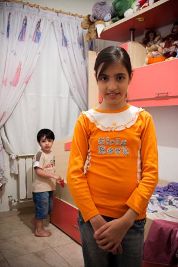
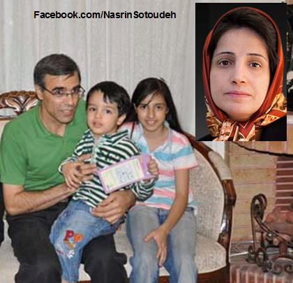

|
|

نامه نسرین ستوده به دخترش مهراوه: تو به مانند من طاقت آوردي
جمعه26 فروردین 1390
تغییر برای برابری - همزمان با اعلام جایزه پن امریکا به نسرین ستوده که به خاطر دفاع ازحق آزادی بیان به او اهدا می شود، نامه نسرین ستوده به دخترش مهراوه را دریافت کردیم. نامه را در زیر می خوانید:

عکس: رها عسگری زاده
مهراوه عزيز دلم!
دختر افتخار آفرينم!
از بند 209 زندان اوين برايت سلام و آرزوي سلامتي ميفرستم. از سبد سلامهايم نگرانيها، دلتنگيها و اشكهايم را برميدارم تا سبدم سرشار از سلام و سلامتي براي تو و برادر عزيزت باشد.
شش ماه است از شما كودكانم دور ماندهام. در اين مدت تنها امكان چند بار ملاقات با شما را در حضور ماموران امنيتي داشتهام. در اين مدت حتي امكان ارسال نامهاي يا دريافت عكسي از شما يا حتي ملاقاتي آزادانه و بدون شرايط امنيتي را نداشتهام و تو نميداني چه غمي بر دلم چنگ ميزد هر بار كه ميديدم در چه شرايطي بايد با شما ملاقات كنم . . .
هر بار پس از ملاقات و هر روز و هر روز در جدال با خويشتن از خود پرسيدهام آيا حقوق كودكان خود را رعايت كردهام؟ و تو نميداني چقدر نياز داشتم تا مطمئن شوم تو كودك نازنينم كه به عقل و درايتات ايمان دارم، مرا متهم به نقض حقوق كودكانم نميكني.
ميداني مهراوه جان، اصلا از روز اول بازداشتم به تو و برادرت و حقوقتان ميانديشيدم و براي تو به دليل سن و سالات بيشتر نگران بودم. نگراني از طاقتات و قضاوتتو، نگراني از روحيهات و بالاتر از همه، نگراني از پذيرش اين موضوع توسط دوستان و همكلاسيهايت.
اما ديري نگذشت كه ابرهاي ترديد و دودلي رخت بربستند و من دانستم هيچ يك از آن نگرانيها واقعيت ندارند و من، نه، ما توانستيم محكم بر جاي خويش بايستيم . . .
تو به مانند من طاقت آوردي، در پاسخ به صحبتم كه گفتم: "دخترم يك زماني فكر نكني كاري كردم كه شايستهي چنين مجازاتي باشم و فكر شما نبودهام" و بعد با اطمينان به تو گفتم: "همهي كارهايم قانوني بوده است" به مهرباني با دستهاي كودكانهات صورتم را نوازش كردي و به من اطمينان دادي كه: "ميدانم مامان . . . ميدانم" و من آن روز از كابوس قضاوت فرزندانم رها شدم.
دخترم ! نگرانيهايم بابت رابطه تو و همكلاسيهايت نيز كاملا اشتباه بود، زيرا هميشه نسل جديد، زودتر از پدر و مادرها به خرد و انديشهورزي ميرسند . . .
و اين چنين بود كه من از همهي نگرانيها خلاص شدم و محكم و استوار بر خانه اولم ايستادم . . . .
اين ايستادگي را بيش از همه، مديون تو و پدرت هستم.
مهراوه عزيز دلم !
بگذار كمي از خاطرات خوشمان برايت بگويم. بارها شبها موقع خواب در زندان به يادم ميآيد چگونه تو را خواب ميكردم. در ميان لالاييهاي مختلف و شعرهاي متفاوتي كه برايت ميخواندم. "پريا" را خيلي دوست داشتي. شبها موقع خواب "پريا" را ميخواستي و من شروع ميكردم:
يكي بود يكي نبود
زير گنبد كبود
لخت و عور، تنگ غروب سه تا پري نشسته بود.
. . .
دخترم !
يكي از مهمترين انگيزههايم براي پيگيري حقوق كودكان، تو بودي. همواره فكر ميكردم و هنوز هم فكر ميكنم كه نتيجهي همهي تلاشهايم براي احقاق حقوق كودكان به هيچ كس، به اندازه كودكانم نميرسد. هر بار كه از دادگاه كودكان آزار ديده به خانه ميرسيدم تو و برادرت را بيشتر و بيشتر در آغوش ميفشردم. هنوز هم دليل آن را نميدانم. اما گويا از اين طريق ميخواستم آزار كودكان قرباني را جبران كنم !!!
يادم هست كه يك بار گفتي دلت نميخواهد 18 ساله شوي و وقتي دليلاش را پرسيدم جوابي دادي كه گويي كودكي امتيازهايي دارد كه نميخواهي از دستشان بدهي و تو نميداني اين جوابات چقدر مرا خوشحال كرد.
در ميان حرفهايت چقدر شده كه به من و پدرت گوشزد كردهاي كه هنوز كودكي و بايد حقوق كودكانهات را رعايت كنيم و اينكه هنوز 18 سالات نشده و . . .

و به اين ترتيب ما را وادار به رعايت حقوق خودت ميكردي و چه كار خوبي ميكردي. چون گاه حتي غفلت ميتواند حقوق ديگران را پايمال كند هرچند آن ديگري، فرزند شخص باشد.
رعايت حقوق، گرفتن حق، عدالت طلبي، قانون محوري و خلاصه داستان ترازو و شمشير همه، همان است كه تو با زبان كودكانهات ميخواستي و ما را كه خودمان را بزرگترين غمخوار و ولي تو ميدانستيم هشيار ميكردي.
مهراوهي عزيزم !
همانطور كه هرگز نتوانستم حقوق تو را ناديده بگيرم و در حد توان خويش در راه حفظ حقوقات تلاش كردم، به همان ترتيب هرگز نتوانستم حقوق موكلانم را نيز ناديده بگيرم.
چگونه ميتوانستم وقتي موكلانم در زنداناند، به محض دريافت احضاريه از ميدان به در بروم؟ چگونه وقتي آنها به من وكالت داده بودند و در انتظار محاكمه بودند آنها را رها كنم؟ هرگز نميتوانستم.
در پايان دوست دارم به تو بگويم كه باز هم براي حفظ حقوق بسيار كسان و از جمله كودكانم و آينده شما، وكالت چنين پروندههايي را پذيرفتم و بر اين اعتقادم كه سختيهايي كه خانواده ما و بسياري از موكلانم طي سالهاي اخير تحمل كردهاند، بينتيجه نيست. عدالت درست در همان زمان كه از او كاملا قطع اميد كردهاند، از راه ميرسد. بيگمان ميرسد . . .
برايت دنيايي كودكانه و پر از شادي و شادماني آرزو ميكنم. اگر بابت پروندهام از بازجويان يا قضاتم ناراحت و دلتنگي، با نواي كودكانهات برايشان آرامش طلب كن تا شايد از اين راه ما نيز به آرامشي شايسته دست يابيم.
دلتنگ توام
صد بار ميبوسمت
مامان نسرين